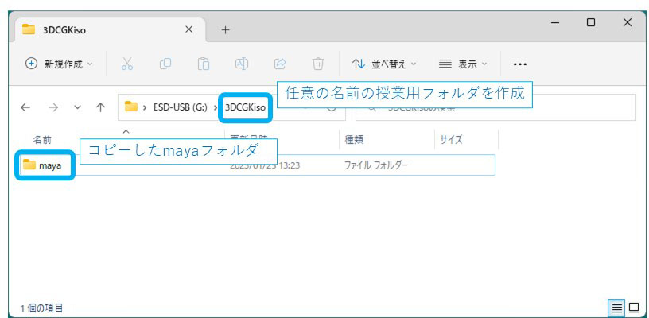
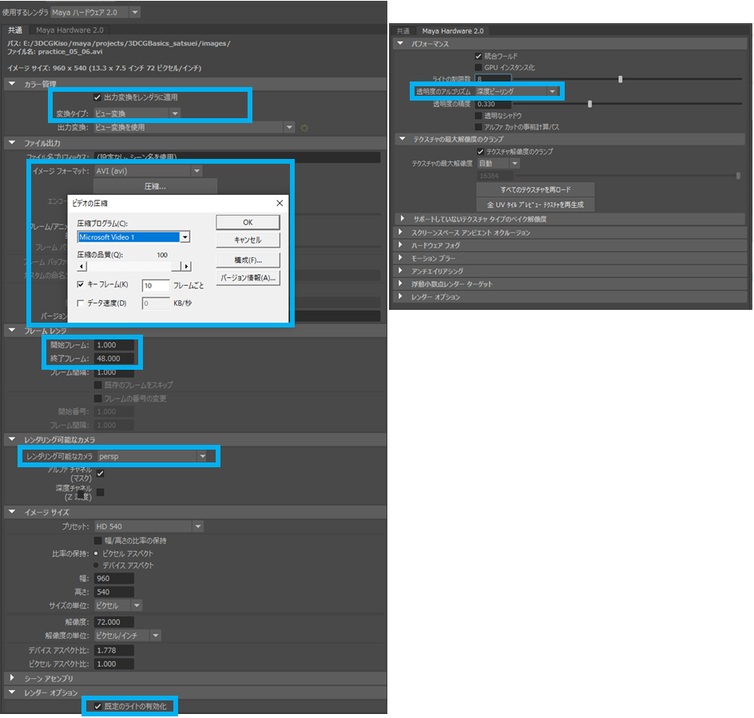
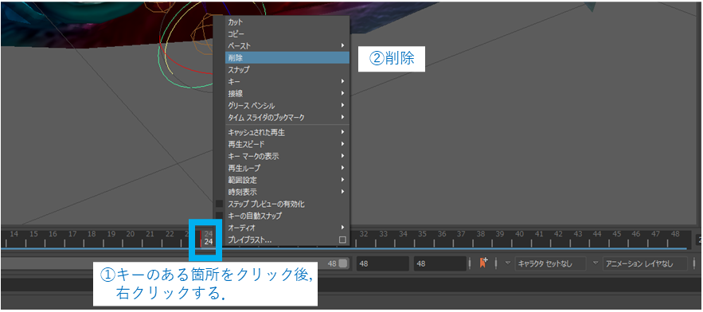
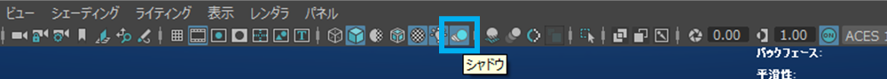

Mayaデータの管理
授業で使用するmayaの個人ドキュメント（プリファレンスやプロジェクト，シーンデータ等）は「maya」フォルダに全てまとまっている． 本授業では以下の方法でmayaフォルダを大学の個人ストレージやUSBメモリに保管する．
初回一度だけ行うこと
Maya上でプロジェクトの作成を行う．
- 初回授業で行う．
以下のフォルダのどちらにデータが生成されているかを確認する．
- C:\Users\【ユーザー名】\Documents\maya
- C:\Users\administrator\Documents\maya
該当するmayaフォルダを自分の好きな場所にコピーする．
- 個人オンラインストレージやUSBメモリなど
- 演習室ＰＣをログアウトしても残る場所
以降，演習用ＰＣ内のドキュメントフォルダは一切使わない．
USBメモリの場合，例えば下図のように保存する．

mayaフォルダに「3DCGBasics_maya.bat」を入れる．
- 自分のmayaフォルダをMayaへ読み込ませるためのバッチファイル
USBメモリの場合，例えば下図のようにバッチファイルを入れる．

毎回作業の初めに行うこと
自分のmayaフォルダが入ったメディアをＰＣに接続する．
- 大学の個人ストレージの場合は，Zドライブなどにマウントされていればよい．
自分のmayaフォルダの中にある「3DCGBasics_maya.bat」をダブルクリックしてMayaを起動する．
シーンを変えたいときはMaya上からシーンファイル読み込みを行う必要がある．
- エクスプローラからシーンファイル（.mb）を直接ダブルクリックしないこと．
作業を終了するときは，必ずMayaやPhotoshop等，自分のストレージから読み込んでいるアプリケーションを終了すること．
用意するストレージ
容量の余裕があるうちは，大学用のオンラインストレージ等を使用していただいてかまいません．
- 授業を通し，64GB程度あればよいと予想しています．
将来的にポータブルストレージを使いたい方は購入も検討しましょう．
USBメモリ
- 256GB以上のものを推奨
外付けSSD
- コストパフォーマンスに優れるので1.0TBのものを推奨
授業概要
授業の目的
MAYAを中心とした基本操作（モデリング，アニメーション初歩）を習得する．
授業で学ぶ技術
Mayaを用いて以下の技術の基礎を学ぶ
モデリング
- 主にPolygonモデリング
シェーディング
- 質感や光の反射など
アニメーション
- キーフレームアニメーション
- リグ（スケルトン，スキニング）
レンダリング
- カメラや光源の設置
- 動画ファイルの書き出し
エフェクト
- 気泡，土煙などを予定
学習範囲外
NURBSの高度な活用
- 工業製品などをデザインするものなので，基礎の範囲を逸脱
高度なシェーダーの作成
- プログラマーの守備範囲になるので，あまり踏み込まない．
リアルタイムレンダリング
- 計算コストを考慮することになり，高度であるので割愛する．
授業の進め方
第１回～７回
魚のアニメーションを作る．
目的
魚のアニメーション制作を通し，Mayaに慣れる． Mayaの基本概念（オブジェクト，マテリアル，ライティング，レンダリング）を理解する．
作例

第６回目時点の標準目標レベル．
備考
美的表現の追及よりも完成を重視する．
自分がどの分野に興味があるのか，を念頭に置いて授業を受けるとよい．
- 最終課題で好きなものを作ってもらうため．
一回の授業内で５～６つ程度の演習を行う．
- 授業の節目で課題として提出してもらう．
演習ごとに，冒頭で新しい技術を紹介するので，学生の皆さんも同時に手元のＰＣで手を動かすこと．
やりたいことを実現するため，最低限の技術を順に紹介していく．
- Mayaは機能が多すぎるので，混乱を防ぐため．
第８回～第１２回
最終課題：残りの授業内で最終課題に取り組む． 好きなもの，興味のあるものを自由に作る．
目的
自由課題を通し，Mayaへの理解をさらに深める．
備考
初日に最終課題のプロトタイプを作る．
- イメージボードや絵コンテを用意する．
- タスク量のイメージをつかむ．
第１３回
発表＆講評 簡単にプレゼンしてもらう予定．
共通
授業で紹介する技術や操作は，このページ下部のリファレンスにほぼ全てまとめてある．
- 後で見返せるので，演習中は手を動かして慣れる．
- やり方を忘れてしまった場合に活用すること．
- MayaヘルプやGoogleにも頼ること．
- それでもやり方が分からない場合，直接講師に尋ねること．
自宅作業はぼほ無い予定．
- 自主的に作業するのは可
評価について
出席数と提出された課題を元に，総合的に判断．
自宅作業が無くても相対的に評価が低くなることはない．
- いい感じに調整します．
第１回：ラピッドプロトタイピング

- オブジェクト配置から，レンダリングまでざっくりと作る．
- 今後各部（３Ｄモデルやテクスチャ）を作りこんでいく．
演習１：初期設定とプロジェクトの保存
作例

条件
演習時間：10分程度
制作
最初のMayaの設定
- 様々なファイルにアクセスしやすくする．
- PCを変えた時に設定を引き継ぎやすくする．
最初のプロジェクト設定
メインメニューから，ファイル > プロジェクトウィンドウ
新規をクリック
プロジェクト名：3DCGBasics
場所：変更しない．
- ここがプロジェクトディレクトリ，ワークスペースのルートとなる．
- ここで指定したディレクトリにworkspace.melというプロジェクト設定ファイルが生成される．
- 他に様々なフォルダが生成されているはず．
大きさや距離，位置の単位を変更する．
センチメートル単位に変更する．
基準になるグリッドサイズを変更する．
魚の詳細なモデリングから，魚が泳げるスペースの作成までがやりやすい大きさに変更する．
長さと幅：200
- 400cm × 400cm
グリッド ラインの間隔：50
- 50cm間隔
サブティビジョン：50
- 1cm間隔
その他プリファレンス設定
メインウィンドウ右下のアニメーション プリファレンスをクリックする．
設定 > タイム スライダ
- 再生スピード：24 fps × 1
ファイルを保存する．
参考資料
このページで手に入らない情報はMayaヘルプやGoogle検索を活用する．
演習２：オブジェクトを配置して簡単な魚を作る．
作例

条件
演習時間：25分程度
制作
胴体オブジェクトを配置する．
魚の胴体となる立方体ポリゴンを１つ配置する． 深度：魚の顔から尾に向けての長さ
ヒレオブジェクトを追加する．
魚のヒレとなる平面ポリゴンを追加する．
- Z軸方向を魚の正面にする．
- 最も小さいグリッドが1cm間隔であることに留意．
演習３：魚オブジェクトにマテリアルを適用する．
作例
条件
演習２で作成したシーンを元に，各オブジェクトに色，またはテクスチャをつける．
- テクスチャの作成は凝りすぎると時間がかかるので，凝りすぎないこと．
演習時間：50分程度
制作
胴体マテリアルを作成して適用する．
Blinn シェーダを使用する．
ヒレマテリアルを作成して適用する．
- Blinn シェーダを使用する．
- 透明度を使用する．
胴体マテリアルのテクスチャを作成する．
プロシージャルテクスチャを用いる．
- 2Dテクスチャ
- 3Dテクスチャ
演習４：魚オブジェクトの移動アニメーションを作成する．
作例

条件
- 簡単なパスアニメーション．
- 演習時間：30分程度
魚オブジェクトをグループ化する
水底を作る．
マテリアル
- サーフェス > lambert シェーダ
テクスチャ
- 2D テクスチャ > 山
魚の移動軌跡を作る．
モーションパスを作成する．
クセが強いので慣れが必要．
シェルフをカーブ／サーフェスに変更する．
いずれかのツールでカーブを作成する．
- 円
- EP カーブツール
カーブを閉じる
- メインメニューから，カーブ > 開く・閉じる
カーブの編集
選択モードの変更
- 右クリック長押し後，CV
移動ツールなどでCVの座標を編集する．
オブジェクトをモーションパスにアタッチする．
オブジェクトグループとカーブを選択．
メインメニューをアニメーションに変更
コンソトレイント > モーション パス > モーション パスにアタッチのオプション
タイムレンジ：開始／終了
- 時間はフレーム単位
フロント軸：Z（シーンにより異なる，魚の前方向の軸を選択する．）
アップ軸：Y
フロント方向を反転：魚の向きがZマイナス方向ならチェックを入れる．
オブジェクトをモーションパスからデタッチする（外す）．
- オブジェクトを選択する．
- メインメニューから，編集 > 種類ごとに削除 > モーション パス
演習５：レンダリングして動画ファイルを書き出す．
作例
条件
- 最低でもプレイブラストができればよい．
- 演習時間：20分程度
平行光源をシーンに追加する．
カメラをシーンに追加する．
シェルフから，カメラを作成アイコンをクリックする．
カメラから見たビューに切り替える．
カメラでオブジェクトを視界内にとらえる．
カメラは定点のまま，オブジェクトを追う．
現在のフレームを静止画で書き出す．
Arnold Render だとうまくいかない場合もある． Maya ハードウェアで十分．
構図を決める．

上図ビューパネルのアイコンをクリックし，解像度ゲートを表示する．
レンダービューを開く

ステータスラインにある目のようなアイコンをクリックする． レンダラーに Arnold Renderer が選択されている時はウィンドウが開くまで少し時間がかかる．
レンダービュー

ここにレンダリング結果のプレビューが表示される．
レンダリングを行うビュー／カメラを選択する．

ビュー変換がONになっていることを確認

ここがONになっていないと，ビューパネルにおける作業中の色から大きく変わってしまう．
イメージ保存

ファイル > 「イメージの保存」をクリック．
ビュー変換をONにする．
未記入
ファイルの名前と種類

ファイル名を入力し，ファイルの種類を自分が使いやすいもの（JPEGなど）を選び，保存する． Mayaの仕様で上書き保存はできないことに留意．
保存されたファイルを確認する．
プレイブラストで動画を書き出す．
比較的高速で書き出せるが，一部書き出せないオブジェクトもある．
Mayaハードウェア2.0で動画を書き出す．
レンダー設定ウィンドウを表示する．
レンダー設定
カラー管理
- 出力変換をレンダラに適用：ON
- 変換タイプ：ビュー変換
ファイル出力
イメージフォーマット：AVI
圧縮：Microsoft Video 1
- Mac OSなら Quick Time
- 色数が多い場合，未圧縮で行うほうがベター．
圧縮の品質：100
フレームレンジ
- 開始フレーム：1
- 終了フレーム：タイムスライダの終了時間に合わせる．
レンダリング可能なカメラ
- パースペクティブビューの場合：persp
- カメラを使う場合：カメラ名
レンダーオプション
- 既定のライトの有効化：OFF
Maya Hardware 2.0（下図の右）
- 透明度のアルゴリズム：深度ピーリング

バッチレンダーでレンダリングを開始する．
- シェルフ「レンダリング」のバッチレンダーアイコンをクリックする．

レンダリングが終わるまで待つ．
- 下図のメッセージが表示されたら終了．
動画ファイルを確認する．
- 下図のフォルダにファイルが作成される．
動画を確認する．
- ウィンドウズメディアプレイヤー（wmp）を使う．
- スタジオＰＣで使えるかは要検証．
Mac OS ならQuick Time
事前準備：作りたい魚の画像を用意
第２回授業までに，作りたい魚の参考画像を用意しておく．
条件
最低でもサイドビューの画像１枚．
- 出来ればいろいろな角度から見た参考画像も複数．
- 授業時間中にYoutubeなどで動画を参考にしてもよい．
見栄えも考慮に入れる
- 透明感のあるヒレ
- 鮮やかな色彩
- アニメーション映え
逆に適さない魚
小さすぎる魚
- 参考になる画像の解像度が足りなくなる場合がある．
備考
この魚を元に７回までの授業を行うので慎重に選ぶ．
- モデリング，テクスチャ，アニメーション，エフェクト
講師の作例では「ネオンテトラ」
第２回：魚のモデリング
演習１：魚のモデリング（胴体）

魚のサイドビューの資料を参考に，胴体部分のモデリングを行う．
条件
ポリゴンの詳細度（ポリゴン数）はいたずらに増やさないこと．
- 後々大変になる．
演習時間：20分程度
下絵の挿入
魚の写真を下絵としてMayaに取り込む． 取り込んだ後のイメージビューをレイヤー化し，モデリングの邪魔にならないように選択不可にする．
ビューを切り替える．
スプリットビューに切り替える．
- ビュー上でSpaceキーを押す．
目的のビューへ切り替える．
- 分かれたビューの上でSpaceを押す
イメージプレーンの読み込み
- ビューを「Side」ビューに切り替える．
- メニューから，ビュー > イメージプレーン > イメージプレーンの読み込み．
オブジェクトを表示したまま選択不可にする．
- オブジェクトを選択する．
- チャンネルボックス／レイヤ エディタから，ディスプレイ > レイヤ
- 選択項目からレイヤを作成
- レイヤの三つ目のアイコンを「R」へ
ポリゴンが選択できてしまう場合．
アトリビュートエディタから，以下の部分にチェックが入ってしまっていないか確認する．

コンポーネントを操作する．
コンポーネントとはメッシュを構成する頂点，エッジ，フェースのこと．
選択モードを変更する．
メッシュの上で右クリックを長押しし，頂点，エッジ，フェースいずれかの上までドラッグして離す．
シンメトリ編集
ウィンドウ右側の横倒しのタブ「モデリング ツールキット」から，シンメトリの軸を「オブジェクトX」へ
後ろのコンポーネントを選択しないようにする．
- オブジェクトを選択する．
- アトリビュートエディタから，メッシュ コンポーネント ディスプレイ > バックフェースカリング：全体
エッジループを選択する．
- エッジループとは，リング状につながった複数のエッジのこと．
- 選択モードをエッジに変更後，エッジをダブルクリックすると選択できる．
ペイント選択ツール
ウィンドウ左側「ツールボックス」の上から３番目のアイコンを左クリックする． コンポーネントをドラッグして連続的に選択することができるツール．
オプション
アイコンをダブルクリックして開く．
演習２：魚のモデリング（ヒレ）
ヒレ部分を板ポリゴンで作る．
条件
- 魚によってヒレの数や形状が異なることに留意．
- 演習時間：20分程度
ヒレを配置する．
ポリゴン板で作成する．
胸ヒレを複製する．
オブジェクトをミラー複製する．
ピボットをX値0の位置へ移動する．
- Xキー + ピボット移動
トランスフォームのフリーズ
複製する（Ctrl + D）
スケールX値を-1に
トランスフォームのフリーズ
トランスフォームのフリーズ
見た目はそのままトランスフォームを0にする．
- オブジェクトを選択する．
- シェルフを「ポリゴンのモデリング」に切り替える．
- 「トランスフォームのフリーズ」アイコンをクリックする．

ピボットモードに切り替える．
ピボットとは
オブジェクトの移動，回転，拡大縮小の中心点． ピボットは基本的にはオブジェクトの中心に置く．
ピボットモードに切り替える．
- 移動ツールに切り替え，オブジェクトを選択する．
- Dキーを押す．
- もう一度Ｄキーを押すとピボットモードを抜ける．
ピボットをスナップ移動する．
- ピボットモード中に，Xキーを押しながらドラッグする．
- もう一度Dキーを押すとピボットモードを抜ける．
ピボットをオブジェクトの中心に移動する．
- オブジェクトを選択し，移動ツール等に切り替える．
- シェルフから，「中央にピボットポイントを移動」アイコンをクリックする．
演習３：魚のモデリング（顔）

魚の顔，特に口と目の部分に力を入れる．
条件
ポリゴンの詳細度（ポリゴン数）はいたずらに増やさないこと．
- 後々大変になる．
この段階では目は片目だけ作る．
演習時間：40分程度
頭，アゴ，口を作る．
- 上アゴと下アゴを別々の押し出しで成形する．
- 口の中は程々にし，クチビル周りに時間をかけるのが望ましい．
スマート押し出しを無効化する
気づかずに誤って不要なフェースを作ってしまう場合がある．
- 移動ツールをダブルクリックする．
- スマート複製の設定 > ドラッグしてコンポーネントを押し出し：OFF
フェースを分かりやすくする．
オブジェクトを選択
アトリビュートエディタから，メッシュ コンポーネント ディスプレイ
- センターの表示：ON
境界の表示
- 境界幅：2.000程度
ポリゴンを押し出す．
押し出すフェースを選択する．
選択モードを「フェース」へ．
Shift ＋左クリックで複数選択．
押し出しツール
モデリング ツールキット
コンポーネント > 押し出し
押し出しツールをクリック
面積のないフェースの処理
- オブジェクトを選択する．
- メインメニューから，メッシュの編集 > マージ
ポリゴンのミラー
モデリング作業中にシンメトリが破綻した場合などにミラーをやり直す．
オブジェクトを選択する．
メインメニューから，メッシュ > ミラー
シンメトリにならないコンポーネントがあった場合，マージのしきい値を大きくしてみる．
- 0.2 程度から試してみる．
どうしてもシンメトリできない．
インスタンスを使う．
半分にしたオブジェクトを選択する．
メインメニューから，編集 > 特別な複製 オプション
- ジオメトリタイプ：インスタンス
- スケール値 Ｘ：-1.0000
最終的には結合する．
- メインメニューから，メッシュ > 結合
エッジループを挿入する．
- モデリングツールキットから，マルチカットをクリックする．
- エッジ上で Ctrl を押したまま左クリック
10%毎にスナップしながらエッジループを挿入する．
Ctrl + Shist + 左クリック
エッジの中央にエッジループを挿入する．
Ctrl + 中ボタンクリック
演習４：魚のモデリング（目）

目を作る．
- ポリゴン球を半分にカットして用いる．
- エッジが集まる極方向を黒目部分に用いる．
眼の周辺を整える．
目のポリゴン球との境目を，自然な見た目に整える．
頂点の面取り．
- 頂点を選択する．
- メインメニューから，メッシュの編集 > 頂点の面取り
コンポーネントをスライドさせる．
エッジループも可能． ポリゴンの形状を維持したままコンポーネントだけを移動させる．
- コンポーネントを選択する．
- Shift + Ctrl を押しながら移動ツールで移動させる．
フェースを分割する．
- モデリングツールキットから，マルチカットをクリックする．
- 分割したいフェースに属する頂点かエッジを２か所左クリックする．
- Enterキーで確定する．
演習５：魚のモデリング（仕上げ）
メッシュオブジェクトの名前をつける．
アウトライナから，各オブジェクトに名前を付ける． 以下，命名例
- fish_body
- fish_fin_top
- fish_fin_tail
- fish_fin_back
- fish_fin_bottom
- fish_fin_chest_l
- fish_fin_chest_r
- fish_eye_l
- fish_eye_r
メッシュを整える．
- 体の幅，長さの比率の微調整
- より丸みを帯びた背と腹方面へエッジを寄せる．
- 目，ヒレの位置を微調整．
リトポロジ
不正なフェースを修正し，トポロジ的に正しい状態へ整えること．
Mayaで作成したデータを外部レンダラーやゲームエンジンなどに用いる場合，できるだけ行った方がよい．
- 描画が崩れたり，エラーが発生する可能性がある．
不正なフェースを選択する．
オブジェクトを選択し，メインメニューから，メッシュ > クリーンアップ のオプション
操作：一致するポリゴンの選択
テッセレーションによる修正
５辺以上のフェース
- マルチカットで４角形に分割する．
凹型フェース
- 頂点を移動させて解消する．
非平面なフェース
- 各種リラックス操作で解消できる場合がある．
- 本授業では重視しない．
５辺以上のフェースを修正する．
- マルチカットを用いて４角形に分割する．
- 分割により増えた頂点からエッジループを挿入する必要がある．
凹型フェースを修正する．
- 頂点を移動させ，手作業で解消する．
- クリーンアップのオプションからこまめにフェース選択を行い，試行錯誤する必要がある．
重なったフェースの修正
オブジェクトが全体的にフェースが重なっている場合，以下の操作で重なりを修正できる．
オブジェクトを選択する．
メインメニューから，メッシュの編集 > マージ
メインメニューから，メッシュ > クリンナップ
- 操作：一致するポリゴンのクリーンアップ
- ラミナ フェース（すべてのエッジを共有するフェース）
スカルプトツールを使う
コンポーネントを操作する方法ではなく，ZBrushのようなスカルプト方式でメッシュを編集できる．
ジオメトリのスカルプトツール
オブジェクトを選択し，メインメニューから，サーフェス > ジオメトリのスカルプトツール
- オブジェクトのバックフェースカリングをOFFにする必要がある．
- ストローク > シンメトリ でシンメトリ設定をする．
- 押し込み，引き出しなどもあり
メッシュのスムーズ
ポリゴン全体を整えつつ，分割数を増やすことができる．
- メインメニューから，メッシュ > スムーズ
- スムーズを行うとフェースが増えるので，使いすぎないこと．
第３回：魚のテクスチャ
演習１：魚のUVを作成する．

テクスチャを貼るために必要なUVを作成する．
条件
- 魚によってヒレの数や形状が異なることに留意．
- 演習時間：20分程度
UVとは
ポリゴンとテクスチャの対応を決める情報のこと． U,Vの座標軸がある．
UV漏れの確認
UVエディタから，「チェッカマップ」アイコンをクリック
UVの向きの確認
UVエディタから，「シェード」アイコンをクリック
- 青：正しい向き
- 赤：反対の向き
体のUVを作成する．
UVを自動作成する．
最初に仮のUVを作成する．
- 魚の体のオブジェクトを選択する．
- シェルフを「ポリゴンのモデリング」に切り替える．
- シェルフから，UVエディタを開く
- UVエディタメニューから，作成 > 自動
全てのUVを切り離す．
おそらく縫合がチグハグなので，一度全て切り離す．
- 範囲選択で全てのエッジを選択する．
- UVエディタメニューから，カット/縫合 > カット
UVを縫合する．
魚の中心のエッジループ以外を縫合する．
UVの端にするエッジループを選択する．
ZY平面上の魚のエッジループを選択する．
- 選択モードを「エッジ」へ変更する．
- ビューから，魚の中心のエッジループを選択する．
UVを端のエッジ以外縫合する．
選択を反転し，縫合するエッジを選択した状態にする．
- メインメニューから，選択 > 反転
- UVエディタメニューから，カット/縫合 > 移動して縫合
UVを展開する．
UVを展開することで，多少歪みを整えることができる．
- UVを選択する．
- UVエディタメニューから，修正 > 展開
UVシェルを選択する．
縫合されたひとまとめのUVをUVシェルという． 選択モード：UVシェルで選択することができる．
UVをシンメトリ化する．
- UVを選択する．
- UVエディタメニューから，ツール > シンメトリ化
- UVの端のエッジを１つ選択する．
- ブラシで反転軸の反対へ移動させるUV上をドラッグする．
目のUVを作成する．
UVを自動作成する．
全てのUVを切り離す．
UVを縫合する．
目のポリゴンの端のエッジループ以外を縫合する．
UVを展開する．
ヒレのUVを作成する．
UVを自動作成する．
UVを展開する．
口の中のUVを分ける．
ビューから，口周りのエッジループを選択する．
UVエディタメニューから，口のUVシェルが分割されたことを確認．
口のUVシェルをカットする．
口周りのエッジループを選択する．
UVエディタのビューから，shift + 左ボタンを押したままドラッグし，口のUVシェル全体を範囲選択する．
- 手順4のエッジループから反転選択される．
移動して縫合
展開
回転を整える．
- 真ん中の縦のエッジを選択し，配置してレイアウト > エッジの方向
演習２：魚のUVをレイアウトする．

条件
- 演習時間：10分程度
テクセルの調整
- テクセルとは，サーフェス上のテクスチャの密度のこと．
- pixel / 単位
- 本授業では，魚1cm当たりのテクスチャのピクセル数
体と目，ヒレのテクセル密度をできるだけ揃える必要がある．
魚のオブジェクトを全て選択する．
UVエディタから，UVシェルを全て選択する．
UVツールキットから，トランスフォーム > テクセル密度
- マップサイズ：1024
- テクセル密度：魚の体がテクスチャをはみ出さない程度に大きく調整する．
テクスチャ密度を設定する．
UVシェルを選択する．
UVツールキットから，トランスフォーム > テクセル密度
- マップサイズ：テクスチャの大きさを入力する．
- テクセル密度：設定したい値を入力する．
UVシェルの向きを整える．
Photoshopで書きやすいように各UVシェルを書きやすい角度に回転させる．
自動レイアウト
手作業でUVをレイアウトすることもできるが，1クリックで自動レイアウトを行うこともできる．
レイアウトオプション
UVツールキットから，配置してレイアウト > レイアウトを Shift + 左クリック
- シェルの事前スケール：オフ
- シェルを回転：オフ
- シェルのパディング：20程度
- タイルのパディング：10程度
- スケール モード：オフ
レイアウトをクリックする．
シンメトリUVを重ねる
目はおそらく重ねることが可能．
- 2つのUVを選択する．
- UVツールキットから，配置してレイアウト > 類似したものをスタック
手作業で微修正を行う．
２つの胸ヒレのUVシェルを近くに並べるなど．
目の向きを修正する．
球なので分かりにくいが，回転させて正しい向きへ修正する必要がある．
シェルを配分
UVエディタメニューから，修正 > シェル配分
UVスナップショットを出力する．
- イメージフォーマット：png
- サイズX, Y： 1024
UVのスナップショットを出力する．
演習３：魚テクスチャを作成する．（PS）

フォトベースのテクスチャを作る．
作例

条件
- 演習時間：100分程度
PhotoshopにUVを読み込む．
outUV.pngをPhotoshopで読み込む．
イメージを16bitにする．
- 凹凸の精度を上げるため．
- メインメニューから，イメージ > モード > 16bit/チャンネル
魚全体を切り抜く．

大まかに切り抜く
- クイック選択ツール
ディティールを切り抜く
- 多角形選択ツール
コピーアンドペーストでレイヤーに分ける．
ノイズの除去
- レイヤーを右クリック > スマートオブジェクトに変換
- フィルター > ノイズ > ノイズを軽減
強さ：軽減するノイズの量
- おそらく「10」でよい．
ディテールを保持：細かい部分を残す量．ノイズは残りやすくなる．
- ウロコ等のディティールを保持する場合：10~20
- それ以外の場合：0
カラーノイズを軽減：カラーノイズの軽減量
- おそらく「100」でよい．
ディテールをシャープに：輪郭を強調する量．ノイズは残りやすくなる．
- 好みで調整．
魚の部位を切り分ける．

- 多角形選択ツール
- コピーアンドペーストでレイヤーに分ける．
- レイヤーには名前を付ける．
部位レイヤーをスマートオブジェクトに変換する．
スマートフィルター機能を使うため，魚の部位別レイヤーをスマートオブジェクトに変更する．
レイヤーを右クリック > スマートオブジェクトに変換
陰影の除去
陰影の表現はMayaが行うので，テクスチャの陰影をできるだけ減らす． ウロコ等のディティールをできるだけ残す．
イメージ > 色調補正 > シャドウ・ハイライト
詳細オプションを表示する．
シャドウ：暗い部分を明るくする．
量：明るくする量
諧調：影響を及ぼす範囲
半径：コントラストを調整
- 大きすぎると，被写体だけではなく，画像全体が明るくなる．
ハイライト：暗い部分を暗くする．
量：暗くする量
諧調：影響を及ぼす範囲
半径：コントラストを調整
- 大きすぎると，被写体だけではなく，画像全体が暗くなる．
調整：上記２つのシャドウとハイライトで調整を行った箇所への調整
- カラー：彩度を上げる
- 中間調：中間調のコントラストを調整
ヒストグラムで色の分布を確認しながら行うとよい．
スマートフィルターの複製
スマートフィルターは移動したり，別のスマートオブジェクトへコピーもできる．
スマートフィルターの移動
ドラッグ
スマートフィルターのコピー
Alt + ドラッグ
白飛びしたハイライトの修正
白飛びしたハイライトを暗くする．
レイヤーウィンドウから，調整レイヤー > レベル補正．
調整レイヤーのレイヤーマスクサムネイルをダブルクリックし，色域指定
- 選択：色域選択
- ハイライト部分をクリックする．
- 許容量で調整．
調整レイヤーのレイヤーモードを「乗算」へ変更する．
調整レイヤーの不透明度で調整する．
白飛びして消えた模様を修正する．
コピースタンプツールで大まかに塗りつぶし，混合ブラシツールで周囲となじませるとよい．
コピースタンプツール
新規レイヤーを作成し，右クリックしてクリッピングマスクを作成
ツールバーから，コピースタンプツールを選択．
ツールバー > コピースタンプツール
- サンプル：現在のレイヤー以下
- Alt + 左クリックでサンプル基準位置決定
- ドラッグしてコピー描画する．
混合ブラシツール
- 描画を行うレイヤーを選択する．
- ツールバーから，混合ブラシツールを選択し，描画する．
各ストローク後にカラーを補充
- 筆に指定の色の塗料を補充する．
- 新しいカラーをブレンドするときにチェックを入れる．
各ストローク後にブラシを洗う
- ストローク後にカンバスから付いた塗料をリフレッシュする．
- 通常，オンでよい．
にじみ
- カンバスからブラシにつける塗料の量．
- 値が大きいほどストロークで色を引きずる．
- 50%ぐらいにしておくとよい．
ミックス
100 ％でカンバスの塗料でペイントされ、0 ％ですべてリザーバーの塗料でペイントされる．
新しいカラーをブランドする際，0に近い値に変更すればよい．
- 「各ストローク後にカラーを補充」をオンにしていない時はほぼ効果なし．
全レイヤーを対象
- 通常，オンで使用する．
- UVレイヤーも巻き込んでしまわないよう，描く瞬間はUVレイヤーを非表示にしておく必要がある．
胸ヒレなどで隠れている模様を補完する．
コピースタンプツールや混合ブラシツールで修正する．
bodyレイヤーの目を塗りつぶす．
混合ブラシツールで周辺に近い色で塗りつぶす．
部位別にスマートオブジェクトにまとめる．
これまでの追加したレイヤーを，部位ごとにまとめてスマートオブジェクトに変換する．
変換後のスマートオブジェクト（レイヤー）にも再度名前を付ける．
スマートオブジェクトの再編集
- スマートオブジェクトを右クリックし > コンテンツの編集
トリミングする．
- メインメニューから，イメージ > トリミング
UVにフィットさせる．
- まず，移動／拡大などで大まかにUVに合わせる．
- ゆがみツールをしようし，UVに合わせる．
- 主に目の位置を基準に合わせるとよい．
ゆがみツールで伸ばして埋める．
UV範囲は基本的にはテクスチャより大きい． まずはテクスチャが足りない部分を大まかに埋める．
メインメニューから，フィルター > ゆがみ
表示オプション
メッシュを表示：変形を分かりやすくする．
追加レイヤーのプレビュー表示
- 使用するレイヤー：UV
ワープツール
- ドラッグして伸ばす．
スムーズツール
- メッシュを整える．
混合ブラシツールで全体を整える．
元の画像を生かしながら色を足す，ぼかす，伸ばすなど，混合ブラシツールが万能．
ヒレに透明度をつける．
グラデーションツールでマスクすることで，ヒレとヒレの付け根などのアルファ値の変化をつけることができる．
- レイヤーウィンドウから，レイヤーマスクを追加
- ツールバーから，グラデーションツールを選択．
- アルファ値を変化させる箇所をドラッグして離す．
- プロパティの濃度でアルファ値の変化を調整する．
二対有る部位のレイヤーを作成する．
体の左右，胸ヒレなどはさらに全ての関連するレイヤーをスマートオブジェクトにまとめる． 「コンテンツの編集」で行った変更がどちらにも反映される．
- body_l や fin_chest_l レイヤーと，関連する（調整）レイヤー等を選択する．
- 右クリック > スマートオブジェクトに変換．
- 生成されたスマートオブジェクトを複製する．
- body_r や fin_chest_r にリネームする．
- （左右）反転し，UVの所定の位置へ移動させる．
全ての部位レイヤーを１つのスマートオブジェクトに保つ．

上図のように，各部位レイヤーがスマートオブジェクトであることを確認する．
- スマートフィルターが残っている場合，再度スマートオブジェクトへ変換する．
- 調整レイヤーやマスクレイヤーがある場合もまとめてスマートオブジェクトへ変換する．
カラーテクスチャをエクスポートする．
オリジナルのpsdファイルは残したまま． Mayaで使うためにpngファイルを出力する．
- メインメニューから，ファイル > pngとしてクイック書き出し．
- ファイル名「fish_color.png」
カラーテクスチャをMayaにインポートする．
ハイパーシェードのテクスチャブラウザにドラッグ＆ドロップする．
マテリアルのアルファにもテクスチャを割り当てる．
テクスチャのアルファを使用したい場合，マテリアルの透明度アトリビュートにもテクスチャを割り当てる必要がある．
後ろのオブジェクトが透けて見えてしまう場合．
透明度ソートを変更
- ビューパネルから，レンダラ > ビューポート2.0のオプション
- 透明度のアルゴリズム：深度ピーリング へ変更する．
テクスチャの再読み込み
Photoshopでテクスチャを作り直した場合，Maya上で再読み込みをする必要がある．
- マテリアルのアトリビュート等からテクスチャを選択する．
- テクスチャのアトリビューから，リロード をクリックする．
第４回：魚のマテリアル
演習１：魚のバンプマップを作成する．

バンプマップとは
テクスチャの一種
ポリゴン面の凹凸の高さを明度で制御することができる．
- 凸：白
- 凹：黒
- 標準：グレー50%
ノーマルマップのための中間的位置づけなため，最終的にはMayaで使用しない．
バンプマップ用レイヤーグループを作成する．
バンプマップ用のレイヤーグループを作る．
一度カラー用レイヤーをグループにまとめ，グループを複製する． 下図のようになる．

部位レイヤー別にグレースケール化する．
部位レイヤーにスマートフィルターを適用する．
白黒化
- レイヤーを選択し，イメージ > 色調補正 > 白黒
- 全ての部位レイヤー
階調の反転
- レイヤーを選択し，イメージ > 色調補正 > 階調の反転
- 凹凸を反転させるなど，必要な部位レイヤーのみ
レベル補正
- レイヤーを選択し，イメージ > 色調補正 > レベル補正
- コントラストを強めるなど，必要な部位レイヤーのみ
他の部位レイヤーへスマートフィルターをコピーする．

全ての部位レイヤーを１つのスマートオブジェクトへ変換する．
追加したレイヤーをまとめ，部位別にスマートオブジェクトに変換する．
二対有る部位のレイヤーを複製しなおす．
body_r や fin_chest_r は一度削除し，body_l や fin_chest_l を複製して作り直す．
バンプマップをエクスポートする．
- メインメニューから，ファイル > pngとしてクイック書き出し．
- ファイル名「fish_bump.png」
バンプマップをMayaにインポートする．
ハイパーシェードのテクスチャブラウザにドラッグ＆ドロップする．
マテリアルにバンプマップを適用する．（Maya）
ハイパーシェードのブラウザから，マテリアルを選択する．
アトリビュートエディタ > バンプマッピング の場所にテクスチャブラウザからノーマル用テクスチャをドラッグする．
ハイパーシェードのブラウザから，マテリアルを右クリック長押し > グラフネットワーク
ハイパーシェードのグラフネットワークから，bump2d~ を選択する．
アトリビュートエディタから，バンプ2Dアトリビュート
- 使用対象：バンプ
- バンプ深度 を調整する．
Maya上でバンプを確認する．
バンプ深度を調整しながら確認する．
必要なディティールを手作業で作成する．（PS）
必要なら重要なディティールを混合ブラシツールなどでレイヤーに書き加える．
- ウロコ
- エラ，アゴ周り
- ヒレの筋
逆に，不要なディティールは，混合ブラシツールなどでにみじませる修正を加える．
混合ブラシツールでディティールを描画する．
演習２：魚のノーマルマップを作成する．（PS）

ノーマルマップとは
テクスチャの一種
バンプマップの機能に加え，ピクセル毎にポリゴン面の向きを細かく変えることができる．
- RGB値で法線の向きを保持
バンプマップより，こちらのほうが主流
難易度が高めなので，バンプマップでもよい．
下図左上：ハイト（バンプ）マップ，右上：ノーマルマップ，中央下：Maya上の表示結果
バンプマップからノーマルマップを作成する．
バンプ用レイヤーグループを複製する．
- normalに名前を変更する．
背景用レイヤーを作る．
- 背景用レイヤーを一番下に作り，グレーバンプのカラーに近い色で塗りつぶす．
全てのレイヤーを１つのスマートオブジェクトに変換する．
- normalグループ内のレイヤーを全て選択する．
- 右クリック > スマートオブジェクトに変換する．
法線マップを生成スマートフィルタを挿入する．
- メインメニューから，フィルター ＞ 3D ＞ 法線マップを生成
- オブジェクト：立方体
- ぼかし：おそらく0でよい．
- ディティールスケール：大き目を推奨，不自然な影ができる場合は下げる．
Gチャンネルを反転させる．
メインメニューから，イメージ > 色調補正 > トーンカーブ
Gチャンネルを反転させる．
Maya（OpenGL フォーマット）用の法線マップにするために必要な処理．
ノーマルマップのディティールを手作業で作成する．
- normalレイヤーグループ（スマートオブジェクト）を右クリック > コンテンツの編集
- バンプマップを修正する．
- 変更を保存する．

ノーマルマップをエクスポートする．
- メインメニューから，ファイル > pngとしてクイック書き出し．
- ファイル名「fish_normal.png」
ノーマルマップをMayaにインポートする．
ハイパーシェードのテクスチャブラウザにドラッグ＆ドロップする．
マテリアルにノーマルマップを適用する．
ハイパーシェードのブラウザから，マテリアルを選択する．
アトリビュートエディタ > バンプマッピング の場所にテクスチャブラウザからノーマル用テクスチャをドラッグする．
ハイパーシェードのブラウザから，マテリアルを右クリック長押し > グラフネットワーク
ハイパーシェードのグラフネットワークから，bump2d~ を選択する．
アトリビュートエディタから，バンプ2Dアトリビュート
- 使用対象：接線空間法線
- バンプ深度 を調整する．
ノーマルマップの参考資料
グレー50%から変化させた場合

ホワイトからブラックへ変化させた場合
演習３：仕上げと撮影
Blinnマテリアルの調整
写真を参考に，明るい部分／暗い部分の色味やハイライトの形状などの再現を試みる．
平行光源を設置する．
光が当たらない暗い部分の色を調整する．
共通マテリアル アトリビュート > アンビエント カラー
単なる白黒ではなく，環境光を意識したカラーを適用するとよい．
光が当たる部分の明るさを調整する．
共通マテリアル アトリビュート > 拡散
既定値：0.8
光沢の調整
スぺキュラ シェーディング >
ハイライト全体の大きさ
偏心（Eccentricity）
既定値：0.3

ハイライトの中でも特に明るいポイントハイライトの大きさ
スぺキュラの減衰（Specular Roll Off）
既定値：0.7

パースペクティブビューからレンダリングする．
レンダラー：Maya ハードウェア 2.0
シャドウ（落ちる影）の表示
課題１：魚の３Ｄモデル
作例

概要
第４回まで作成した魚の３Ｄモデルのレンダリング画像を提出する． レンダリング結果から，一番良いと思うものをJPEGかpng形式で一つ提出する．
条件
パースペクティブビューから撮影を行い，魚の全身をフレーム内に収めること．
イメージプレーン（参考画像）もフレーム内に収めること．
Teamsの「課題１：魚の３Ｄモデル」の提出フォームからアップロードすること．
ファイル形式：JPEGかpng形式
ファイル名は「 K1_【クラス】【クラス番号】_【苗字】.jpg」として提出すること．
例
- K1_A8_satou.jpg
- K1_B12_takahashi.jpg
- K1_D20_itou.jpg
提出期限はTeamsのページを参照のこと．
第５回：魚のループアニメーション
演習１：魚のスケルトン

スケルトン概要
スケルトンとは
- 骨格のこと
- ポリゴンを皮膚のように変形させるもの．
- 複数の関節（ジョイント）と骨（ボーン）からなる．
なぜスケルトンが必要なのか
- 3DCGにおいて，キャラクターの振る舞いのアニメーションを容易にするため．
- 全ての頂点をキーフレームアニメーションで動かすのは膨大な作業になってしまう．
スケルトン作成の準備
魚ポリゴンをグループ化する．
アウトライナから，魚ポリゴン（fish_~）を全て選択する．
グループ化する．
- メインメニューから，編集 > グループ化します
グループ名を「fish_polygon」などへ変更する．
魚ポリゴングループを選択できないようにする．
スケルトン作成時に邪魔になるので，ポリゴンを選択できないようにする．
- アウトライナから，グループを選択する．
- オブジェクトを表示したまま選択不可にする．
背骨（Spine）としてのジョイントを作成する．
パースペクティブビューでは作成しないこと．
ビューをサイドビューに切り替える．
オブジェクト上にジョイントやボーンを表示する．
ビューパネルから，「ジョイントのX線表示」アイコンをクリックし，ONにする．

ジョイントチェーンを作成する．
シェルフをリギングに変更し，「ジョイントを作成」アイコンをクリックする．
ビュー上でジョイントを作成したい場所をクリックする．
必要な分繰り返し，Enter で作成終了する．
- 今回は５，６本程度に留めること．
ジョイント・ボーンの大きさを変更する．
メインメニューから，ディスプレイ > アニメーション > ジョイントサイズ
各ジョイントに名前をつける．
fish_root_joint（最初のルートジョイント）
fish_spine1
fish_spine2
- fish_spine3

ジョイントを調整する．
スケルトンが魚の中心を通るように微調整する．
ジョイントを移動する．
子ジョイントも同時に移動する．
- 移動ツールを使う．
ジョイント単独で移動する．
- ピボットを移動する． ピボットモードに切り替える．
ジョイントのフリーズ
現在の回転をベースのポーズにするために必要．
- アウトライナから，ルートジョイントを選択する．
- トランスフォームのフリーズを行う．

演習２：魚のスキニング

スキニングとは
- スケルトンに対応するスキン（皮膚）を作成すること．
- 具体的には，スケルトンにポリゴンを正しくバインドさせる作業．
スケルトンにポリゴンをバインドする．
アウトライナからポリゴンのグループとルートジョイントを選択する．
- Ctrl を押しながら選択する．
シェルフ（リギング）から，「スキンのバインド」アイコンをダブルクリックし，オプションを表示する．
- オプション指定しない場合はシングルクリックする．

バインドスキンオプション
バインド先：ジョイント階層
バインド方法：最短距離
スキニング方法：クラシック リニア
ウェイトを正規化：インタラクティブ
ウェイト配分：距離
複数のバインドポーズを許可：オフ
最大インフルエンス数：2
- 一つの頂点に影響を与えるジョイントの数
最大インフルエンス数の保持：オフ
使われていないインフルエンスの除去：オン
スケルトンのカラー化：オン
作成時に非表示の選択項目を含める：オフ

スキンのバインドを解除する．
- アウトライナからポリゴンのグループとルートジョイントを選択する．
- ステータスラインの左から，現在のメニューを「リギング」に切り替え

- メニューから，スキン > スキンのバインド解除
スキンウェイト ペイントを使ったウェイトの調整．
スキンウェイトペイント機能を使用し，ウェイト値を調整する．
ウェイトとは
あるジョイントが周辺のポリゴンを変形させる影響力のこと．
スキン ウェイト ペイントツールを開く．
ポリゴングループを選択する．
シェルフから，「スキン ウェイト ペイント」アイコンダブルクリックし，ペイントモードを開始する．
もしくは，
ビュー内でポリゴン上で右クリック長押し > スキン ウェイト ペイント ツール

ウェイトペイント
ポリゴンオブジェクトを１つ選択する．
- 部位別に行った方が無難．
スキンウェイトペイントツールから，ウェイトを編集するインフルエンス（ジョイント）を選択する．
ビュー上でウェイトをペイントする．
- 白色に塗る（1へ近づく） = 影響力を強くする．
- 黒色に塗る（0へ近づく） = 影響力を弱める．
ペイントする値を変更する．
スキンウェイトペイントツールから，「値」を変更する．
ブラシサイズを変更する．
Bキー + 左ボタンドラッグ
ジョイントを回転させて変形を確認する．
現在編集中のジョイントを選択する．
- 中ボタンをクリック，
ジョイントを回転させる．
- 中ボタンドラッグ
回転をリセット．
- 右クリック長押し > バインドポーズに移動
ペイントに戻る．
- アウトライナから，ポリゴングループを選択する．
ジョイントを変更する．
ジョイント or ボーン上で右クリック長押し > インフルエンスの選択
不要な微小ウェイト値を除去する
右クリック長押し > 小さいウェイトを削減
ウェイトの保持
ウェイトの性質上，あるジョイントのウェイトを変更すると，別のジョイントのウェイトが勝手に変わってしまうことがある． これを最小限に留めながら作業をおこなうため，ウェイトのロック機能を活用する．
スキンウェイトペイントツールから，インフルエンス内のロックアイコンをクリックする．

ウィンドウが表示されない場合．
以下を試してみる．
メインメニューから，ウィンドウ > ワークスペース > "Mayaクラシック"を出荷時の規定にリセット
ウェイトをミラーする．
ポリゴンオブジェクトを選択する．
- グループではなく．
メインメニューから，スキン > スキン ウェイトのミラー オプション
- ミラー平面：YZ（講師作例の場合）
演習３：魚のコントローラ

魚に操作するためのコントローラとして，円のNURBSオブジェクトを用いる．
コントローラとは
スケルトンを直観的に操作できるようにする仕組みのこと． リグ（Rig）ともいう．
メインコントローラ
- ルートジョイントの親となるコントローラ．
- 以降追加するコントローラはメインコントローラの子にする．
NURBS円を作成する．
シェルフを「カーブ／サーフェス」に切り替える．
NURBS円アイコンをクリックする．

NURBS円で魚を囲う．
魚を囲うようにNURBS円を配置する．

NURBS円の名前を「fish_main_controller」へリネームする．
main_controllerのトランスフォームをフリーズする．
アウトライナから，fish_main_controllerとルートジョイント（fish_root_joint）をCtrl押しながら左クリックで選択する．
- fish_main_controller，ルートジョイントの順番．
ペアレントコンストレイトを実行する．
ペアレントコンストレイント
ペアレントコンストレイントは，親のオブジェクトに子のオブジェクトを追従させる機能．
- 親にするオブジェクト，子にするオブジェクトの順番に選択する．
- シェルフ（リギング）から，ペアレントコンストレイトアイコンをクリックする．

ペアレントコンストレイントの解除
ペアレントコンストレイントを行った親オブジェクト（コントローラ）を選択する．
アトリビュートエディタから，タブを切り替えて「parentConstraint」のアトリビュートを表示する．

「選択」ボタンをクリックする．

Deleteキーを押す．
- 見た目では分かりにくいが，コンストレイントノードが削除される．
尾コントローラ
魚の体の後方へNURBS円を配置する．

NURBS円の名前を「fish_tail_controller」へリネームする．
アウトライナから，fish_tail_controllerと動かしたいジョイントをCtrl押しながら左クリックで選択する．
- fish_tail_controller，動かしたいジョイント，の順番．
ペアレントコンストレイトを実行する．
尾コントローラをメインコントローラの子にする．

コントローラとスケルトンをグループ化する
メインコントローラとルートジョイントをグループ化する
グループ名を「fish_rig」にリネームする．
- 今後魚をモーションパスに乗せる際，このグループのトランスフォームを用いる．
- ポリゴングループは以降，基本的には触らない．

演習４：魚の尾アニメーション

演習３で作成した尾コントローラに対し，キーフレームアニメーションを施すことでループアニメーションを作成する．
キーフレームアニメーション
尾コントローラの回転値にマーカーとなるキーを設定し，スケルトンをアニメートする．
アニメーション時間を設定する．
アニメーション時間（尾を左右に一往復させる時間）を決める．
- 魚によって変わる．ここでは48フレーム（2秒）とする．
- 4の倍数のフレーム数が好ましい．
タイムスライダから，
アニメーション開始時間，再生範囲の開始時間に「0」を入力する．
再生範囲の終了時間，アニメーション終了時間に「48」を入力する．
- 各自に決めたアニメーション時間を入力すること．

アニメーションキーを打つ．
キーを打つオブジェクト（尾コントローラ）を選択し，以下の操作をキーの数だけ行う．
タイムスライダから，キーを設定する時間（フレーム番号）にスライダを移動
尾コントローラを回転ツールで回転
- 回転ツールを使わず，チャンネルボックスから数値を直に打ち込むこともできる．
チャンネルボックスから，「回転Y」を右クリックする．
「選択項目のキー設定」をクリックする．
- キーを打った後に値を変える際も必要

アニメーションキーの削除
- キーを削除するオブジェクトを選択する．
- タイムスライダから，キーのあるフレームをクリックして選択する．
- 右クリック > 削除

グラフエディタでアニメーションカーブを調整する．
グラフエディタ
アニメーションカーブを詳細に編集できる． キーの追加や値の変更などもここでまとめて行える．
開き方
- メインメニューから，ウィンドウ > アニメーションエディタ > グラフエディタ

キー移動ツール
デフォルトのツール キーや接線（ハンドル）の移動が可能．
ツール切り替え
- 編集 > トランスフォーム ツール > キー移動ツール

キーや接線の移動
- 左クリックでキーを選択する．
- 左ボタンを押してドラッグする．
キーや接線の移動（複数のキーを同時に）
- 範囲選択で複数のキーを選択する．
- 中ボタンを押してドラッグする．
キーの削除
- キーを選択してDeleteキーを押す．
- 範囲選択して複数のキーを削除することもできる．
キーの挿入ツール
ツール切り替え
- 左から２番目の「キーの挿入ツール」をクリックする．

カーブの上にキーを追加する．
中ボタンを押してキーを追加する．
事前にチャンネルボックスを使い，最低でも２つのキーを打っておく必要がある．
- カーブ上にしか追加できないため
ループ化する．
尾コントローラを選択する．
グラフエディタを開く．
以下の二つのアイコンをクリックする．
- プリインフィニティをサイクル化
- ポストインフィニティをサイクル化

接線（キーのハンドル)を微調整し，アニメーションが滑らかにつながるようにする．
ループ表示を解除する．
グラフエディタから，ビュー > インフィニティ のチェックを外す．
演習５：口のループアニメーション
基本的な流れは演習４と同じ．

下あごのスケルトン
ルートジョイントからジョイントチェーンを分岐する．
ルートジョイントからのジョイントを分岐して追加する．
トップビューかサイドビューに切り替える．
シェルフをリギングに変更し，「ジョイントを作成」アイコンをクリックする．
ビュー上でルートジョイントをクリックする．
新しくジョイントを置きたい位置をクリックする．
- Enterキーで作成モードを抜ける．
新しくできたジョイントに名前を付ける
- 「fish_jaw_joint」

- ルートジョイントから下あご用のジョイントを追加する．
- トランスフォームのフリーズ
- 位置を微調整する．
下あごのスキニング
魚の体ポリゴン（fish_body）には既にスケルトンがバインド済みであるので，新しくスキンバインドを行うのではなく，下あごジョイントを体ポリゴンのバインド対象に加える．
ジョイントを後からスキンバインド対象に追加する．
- ポリゴンオブジェクトを選択する．
- 追加するジョイントを追加選択する．
- メインメニュー「リギング」から，スキン > 影響を編集 > インフルエンスの追加
アゴ周りのウェイト調整
- 魚の体ポリゴンオブジェクトを選択する．
- ウェイトペイントツールを使う．
- インフルエンス内の新しく追加したジョイントを選択する．
- 下図のように，下アゴ周辺のみウェイトをペイントする．

- ウェイトをミラーする．
下あごコントローラ
NURBS円を作成する．
「fish_jaw_controller」のように名前を付ける
下図のようにジョイントの位置へ移動し，Y軸方向へ立てる．

ペアレントコンストレイントを行う．
- コントローラ，ジョイントの順に選択する．
下あごのアニメーション
演習４と同様に行えば特に問題なし．
演習６：胸ヒレのループアニメーション

胸ヒレなど，魚のパーツをアニメーションさせてみる．
胸ヒレ用スケルトンの作成

胸ヒレジョイントを追加する．
ビューをトップビュー（top-Y）に変更する．
シェルフから，ジョイント作成アイコンをクリックする．
ルートジョイント（追加する元のジョイント）をクリックする．
- ルートジョイント以外も可能．
新しくジョイントを置きたい位置をクリックする．
- Enterを押してジョイント作成モードを終了する．
新しいジョイントの位置を調整する．
- 他のビューへも切り替えながら行うとよい．
新しくできたジョイントに名前を付ける「fish_chest_l_joint」「fish_chest_r_joint」
ジョイントのミラー
ミラーするジョイントのみ選択する．
メインメニューから，スケルトン > ジョイントのミラー オプション
- ミラー平面：YZ
- ミラー平面はシーンにより異なるので注意．
胸ヒレのスキニング
後から追加したジョイントをバインドする
胸ヒレポリゴンを選択する．
ルートジョイントへのスキンバインドを一旦解除する．
- ルートジョイントと胸ヒレオブジェクトを選択し，スキンのバインドを解除する．
アウトライナから，新しい胸ヒレ用ジョイント「fish_chest_l_joint」と胸ヒレポリゴンオブジェクト「fish_fin_l」を選択する．
シェルフから，スキンのバインドをダブルクリックし，オプションを開く．
バインド先：選択したジョイント

上記の操作を左右胸ヒレ分行う．
胸ヒレ用コントローラ
左右１対のNURBS円を作成し，配置する．
左のジョイントの位置に移動し，スケールも調整する．
複製する．
- メインメニューから，編集 > 複製
複製されたNURBSの「移動X」を反転（ミラー）する．
- チャンネルボックスから
- シーンにより移動Xではない場合もある．
二つのNURBS円のトランスフォームをフリーズする．
NURBS円の傾きを調整する．
- 片方のNURBS円には，チャンネルボックスからもう片方の回転値を反転（−）したものを入力する．
下図は「回転Y」と「回転X」をアニメーションに使う例．

胸ヒレコントローラとジョイントをペアレントコンストレイントする．
アウトライナから，fish_chest_l_controllerとジョイント「chest_l_joint」をCtrl押しながら左クリックで選択する．
- fish_chest_l_controller，ジョイント「chest_l_joint」，の順番．
ペアレントコンストレイトを実行する．
コントローラのリネームとメインコントローラへの子化
NURBS円の名前を「fish_chest_l_controller」へリネームする．
- 胸ヒレ（右）は「fish_chest_r_controller」
胸ヒレコントローラをメインコントローラの子にする．

上記の操作を左右胸ヒレ分行う．
アニメーションに使わない軸をロックする．
アニメーションに使わない軸はロックしておくと間違えて動かしてしまうことを防止できる．
- コントローラ（オブジェクト）を選択する．
- アトリビュートエディタから，トランスフォームアトリビュート
- ロックしたいトランスフォーム（移動，回転，スケール）の数値部分を右クリックする．
- 「アトリビュートのロック」をクリックする．

胸ヒレのループアニメーション
- ２つの軸にキーフレームを打つ．
- 難しい場合は演習４と同様に１つの軸でよい．

より繰り返し回数の多いループアニメーション
- 短いカーブを作成し，繰り返すこともできる．
- ループ化するも参考に

アニメーションの複製＆反転
タイムスライダを0フレームへ移動
コピー元のオブジェクトを選択する．
メインメニュー（アニメーション）から，キー > キーのコピー
コピー先のオブジェクトを選択する．
メインメニュー（アニメーション）から，キー > キーのペースト
反転（ミラー）を行う場合は，特定の回転値をマイナスする必要がある．
- グラフエディタでキーフレームを範囲選択で全て選択し，
- 以下のように左上の入力欄に
*=-1を入力する．

接線を整える．
課題２：魚のループアニメーション
作例

概要
第５回まで作成した魚のループアニメーションのレンダリング済み動画を提出する． レンダリング結果から，一番良いと思うものを一つ提出する．
条件
動画のレンダリング方法は以下を参考に
パースペクティブビューから撮影を行い，魚の全身をフレーム内に収めること．
- 課題１と同様
今回はイメージプレーン（参考画像）はフレーム内に収める必要はない．
Teamsの「課題２：魚のループアニメーション」の提出フォームからアップロードすること．
ファイル形式：avi，movなど
ファイル名は「 K2_【クラス】【クラス番号】_【苗字】.avi」として提出すること．
例
- K2_A8_satou.avi
- K2_B12_takahashi.avi
- K2_D20_itou.avi
提出期限はTeamsのページを参照のこと．
第６回：水中の環境モデリング

演習１：魚の３Ｄモデルを差し替える．
第一回で作ったシーンに魚を移植する．
選択項目の書き出し
移植したいオブジェクトを選択する．
メインメニューから，ファイル ＞ 選択項目の書き出しオプションをクリックする．
- ファイルタイプ：mayaBinaryが無難
- ファイル名：fish
mbファイルが書き出される．
別のシーンから読み込み
移植先のシーンを開く．
メインメニューから，ファイル > 読み込み
- 先ほど書き出されたmbファイルをシーンへ読み込む
読み込んだオブジェクトの連番を1に戻す．
- メインメニューから，ウィンドウ > 一般エディタ > ネームスペース エディタ
:(root)以外を選択して削除する．
オブジェクトを置き換える．
モーションパス上のグループ（fish_group?）に，新しく読み込んだポリゴンオブジェクトグループ（fish::fish_polygon）を加える．
- アウトライナで操作．
ポリゴンオブジェクトグループ（fish::fish_polygon）を選択する．
チャンネルボックスから，移動と回転の値を全て0にする．
ダミーのポリゴンオブジェクトを削除する．

魚の向きが逆な場合
魚のモデリングを，Z軸マイナス方向を正面として行った場合，魚の向きを反転させる必要がある．
モーションパス上のグループ（fish_group?）を選択する．
アトリビュートエディタから，motionPathタブを表示する．
モーションパス アトリビュート
フロント方向の反転にチェックを入れる．
演習２：水底（地面）を作る．

テクスチャ入手
https://hdrihaven.com/ などで入手可能．
サイズ：4K
種類
- カラー（diff）
- ノーマル（nor）
地面となるポリゴンプレーン（平面）を配置する．
シェルフ「ポリゴンのモデリング」から，ポリゴンプレーンの作成 アイコンをダブルクリックする．
ポリゴンのモデリング オプション
- 幅：400（4m）
- 高さ：400（4m）
- 幅の分割数：100
- 高さの分割数：100
古い地面ポリゴンを削除する．
起伏を作る．
ジオメトリスカルプトツールを使って自由に起伏をつける．
ジオメトリスカルプトツール
メインメニュー「モデリング」から，サーフェス > ジオメトリスカルプトツール をクリックする．
ツール設定（必須）
- 基準ベクトル：Y軸

ツール設定（任意）
- 操作：押し込みや引き出し，スムーズ等を切り替える．
- 最大ディスプレイメント：押し込み／引き出しの量

- その他，ブラシの設定などが行える．
地面用マテリアルを作成する．
マテリアルを作成する．
- Blinn シェーダ
- マテリアルを作成する．
マテリアルにテクスチャを割り当てる．
演習３：水中の背景を作る．

背景テクスチャ作成
PhotoshopやIllustratorを使い，グラデーションツールなどで作成．
- 1024 × 1024 ピクセル
- 72dpi

ポリゴン球の作成．
ポリゴン球でシーン全体を覆う．
シェルフ「ポリゴンのモデリング」から，ポリゴン球の作成 をダブルクリックする．
ポリゴン球オプション
ポリゴン球設定．
ポリゴン球を選択する．
アトリビュートエディタから，レンダリング詳細を変更する．
- シャドウの投影 をOFF
- シャドウの受像 をOFF
- 両面 をOFF
- 法線の反転 をON
ライトの影響をOFF
- メインメニューから，ウィンドウ > リレーションシップエディタ > ライトリンク > ライト中心
- ディレクショナルライトからポリゴン球への影響をOFF

ポリゴン球用マテリアル
マテリアルの作成
- サーフェス > Lambert シェーダ
マテリアルにテクスチャを適用する．
- Photoshopで作成したテクスチャをcolorアトリビュートに適用する．
ポリゴン球にマテリアルを適用する．
演習４：水草を作って配置する．

ペイントエフェクトを使って水草を配置する．
ペイントエフェクトの準備
ペイントエフェクト用シェルフをロードする．
以下は一度だけ行えばよい．
プリファレンスから，モジュール > ペイント エフェクト にチェックを入れる．
- 新たにチェックを入れた場合，再起動が必要
シェルフのロードダイアログを開く．
- シェルフ左下の歯車アイコンをクリックし，シェルフのロード… をクリックする．
シェルフ「ペイントエフェクト」をロードする．
- shelf_PaintEffects.mel

地面ポリゴンを選択できないようにする．
ペイントエフェクト作業中に地面を選択してしまうと煩わしいので，地面ポリゴンオブジェクトをビュー上で選択できないようにする．
ペイントエフェクトを地面上に行えるようにする．
地面のポリゴン上にペイント（エフェクト）を行えるようにコマンドを実行する必要がある．
地面ポリゴンオブジェクトをアウトライナ等から選択し，以下の処理を行う．
オブジェクトをペイント可能にする．
- オブジェクトを選択する．
- シェルフ「ペイントエフェクト」から，ペイント可能にする アイコンをクリックする．
ペイントエフェクトで植物を作成する．
プリセットされた形状をエフェクトとしてシーン上に配置できる． アニメーションも自動的に作成される．
むやみに増やしすぎないこと． シーンクラッシュの原因となる．
ペイントエフェクトのブラシの種類を変更する．
シェルフ「ペイントエフェクト」から，ブラシを取得 アイコンをクリックする．

[カテゴリ] > 好きなアイコン をクリックする．
- Underwater
- WaterMesh
ビュー上で，Bキー押しながらドラッグでブラシのサイズを変更する．
ペイントエフェクトを描画する．
シェルフ「ペイントエフェクト」から，ペイントエフェクトツール アイコンをクリックする．

ビュー内のポリゴンオブジェクト上で左クリックを押したままドラッグする．
ペイントエフェクトの間隔を変更する．
- ストローク（ペイントエフェクト）を選択する．
- アトリビュートエディタから，strokeタブ > サンプル密度 を変更する．
ペイントエフェクトの形状を変更する．
ランダムに変化する特性を切り替える．
- ストローク（ペイントエフェクト）を選択する．
- アトリビュートエディタから，strokeタブ > シード
ペイントエフェクトの形状を調整する．
ストローク（ペイントエフェクト）を選択する．
アトリビュートエディタから，brushタブに切り替える．
ブラシタイプ
- メッシュが高品質
グローバルスケール
- 全体的な大きさ
チューブ > 作成
- パラメータ調整
チューブ > 成長
- 部位のON・OFF
- 部位別のパラメータ調整
ペイントエフェクトのカラーを変更する．
ストローク（ペイントエフェクト）を選択する．
アトリビュートエディタから，brushタブに切り替える．
本幹の色
- シェーディング > カラー1
- シェーディング > チューブシェーディング > カラー2
他部位の色
- チューブ > 成長 > [部位] > ~のカール > カラー１，カラー2
ペイントエフェクトの計算量を軽減する．
ストローク（ペイントエフェクト）を選択する．
アトリビュートエディタから，strokeタブ
- 表示精度 を下げる．
- メッシュとして描画 のチェックを外す．
グループにまとめ，一時的に非表示にするのもよい．
ペイントエフェクトをインスタンスとして複製する．
Photoshopにおけるスマートオブジェクトのような複製が可能．
単純にストロークを増やすより計算量は軽減される．
ストローク（ペイントエフェクト）を選択する．
メインメニューから，編集 > 特殊な複製オプション
- ジオメトリタイプ：インスタンス
水草のアニメーション．
ペイントエフェクトは基本的には自動的にアニメーションが生成されている．
ペイントエフェクトのアニメーションを調整する．
ストローク（ペイントエフェクト）を選択する．
アトリビュートエディタから，brushタブに切り替える．
チューブ > 動作 > 乱気流
ペイントエフェクトのループ設定
ループ自体もデフォルトで実行されているはず．
- メインメニューから，生成 > ブラシのアニメーション > ブラシ アニメーションのループ オプション
- サイクル フレーム数：ブラシ アニメーションをループさせるフレーム数
ペイントエフェクトをポリゴン化する．
※いまいち安定しない
Arnold Renderer を使ってレンダリングする際に必要． ペイントエフェクトはArnold Rendererに非対応 ポリゴン化する必要がある．
ストローク（ペイントエフェクト）を選択する．
アトリビュートエディタから，strokeタブ
メッシュ出力 > 四角形出力にチェック
メインメニューから，修正 > 変換 > 「ペイントエフェクトをポリゴン」のオプションをクリック．
- 四角ポリゴン出力にチェック
- ポリゴン制限を0へ変更
変換
カメラを選択する．
アトリビュートエディタから，出力設定 > 深度(Depth)をオンにしてから、深度タイプを最も遠い可視深度に設定
第７回：空間内のアニメーション
演習１：パスに沿って魚を変形する．
ハスに沿って変形させる．
パスに乗せているオブジェクトグループを選択する．
メインメニュー「リギング」から，コンストレイント > モーション パス > パス オブジェクトのフロー オプション
- ラティスの対象：カーブ

アトリビュートエディタから，LatticeShapeのタブを開く
U分割数を増やす．


ラティスベースを選択する．
スケールツールを使い，ラティスベース内に魚を収める．
パスに沿った変形を削除する．
アウトライナから，２つのラティスノードを削除する．

演習３：モーションパス応用．
滑らかにループしたモーションパス
モーションパスをループにする（閉じる）．
アニメーションキーを編集する．
モーションパスをグラフエディタで編集する．
モーションパスのアニメーションもグラフエディタで編集できる．
アタッチしたオブジェクト（グループ）を選択する．
グラフエディタを開く．

アニメーションカーブの編集を行う．
- キーの移動
- 接線の傾きの変更
- キーの挿入
演習４：フォトリアルなカメラ設定
フォーカス
手振れ
演習５：水中エフェクト
水中フィルター
差し込む光の表現
気泡，土煙
魚のより詳細なアニメーション
カメラワーク
実在のカメラのような撮影効果
水中から見た水面の表現
課題３：魚のいる空間
作例
概要
本授業で作成した魚と空間のアニメーションのレンダリング済み動画を提出する． レンダリング結果から，一番良いと思うものを一つ提出する．
条件
動画のレンダリング方法は以下を参考に
設置したカメラから撮影を行うこと．
- perspは不可．
今回はイメージプレーン（参考画像）はフレーム内に収める必要はない．
Teamsの「課題３：魚のループアニメーション」の提出フォームからアップロードすること．
ファイル形式：avi，movなど
ファイル名は「 K3_【クラス】【クラス番号】_【苗字】.avi」として提出すること．
例
- K3_A8_satou.avi
- K3_B12_takahashi.avi
- K3_D20_itou.avi
提出期限はTeamsのページを参照のこと．
第８回：講評と授業総括
課題３講評
授業総括
リファレンス
基礎知識
ここでは全てのタスクにおいて共通する基本要素を解説する．
プロジェクト設定
新規にプロジェクトを作成する．
メインメニューから，ファイル > プロジェクトウィンドウ
新規をクリック
プロジェクト名：3DCGBasics
フォルダ名になる．
ここがワークスペースのルートとなる．
ここで指定したディレクトリにworkspace.melというプロジェクト設定ファイルが生成される．
- 他にも様々なフォルダが生成されているはず．
全てのファイルがこの中に保存される．
ファイルを作成する場所：「PC内で自分が作業しやすいフォルダ」
- 上記のフォルダを作成するディレクトリ．
シーン
シーンとはオブジェクトを含むMayaで作業している空間のこと． Mayaのファイルはシーン単位で保存されている．
オブジェクト
ビューパネルに表示されるもののことをオブジェクト（Object）という． Mayaにおいて，Polygon，NURBS，ライトやカメラ等は全てオブジェクトの一種．
選択モード
Mayaでは，あらゆる場面で選択モードを切り替える． 通常はデフォルトの「オブジェクト」モードにしておくとよい．
切り替え方
ビュー内で右クリックし，切り替えたい選択モードへドラッグする．

アトリビュート
アトリビュートとはオブジェクトの属性や性質のこと． 例えばPolygonオブジェクトにおける移動・回転・スケールのXYZ値など． その他，様々な箇所でアトリビュートは頻出であるので覚えておくこと．
単位を変更する．
メインウィンドウ右下のアニメーション プリファレンスをクリックする．
設定 > 作業単位 > リニア を変更する．
- デフォルト：センチメートル
メインウィンドウの見方
ビューパネル

ビューパネルは，シーン内のオブジェクトを表示する． Mayaを起動した直後はパースペクティブビューがビューパネルに表示されているはず．
メニュー
シーンで作業するためのツールやアクションのほぼ全てが含まれている．
ツールボックス

シーン内のオブジェクトを選択／変換するためのツールが含まれている．
ステータスライン
一般的に使用されるコマンド用のアイコンがここに用意されている．
例えば以下のようなもの
- ファイルの保存関連
- オブジェクトの選択関連
- スナップ関連
- レンダリング関連
アイコンのグループを展開または折りたたむには、垂直の分割線をクリックする．
シェルフ

一般的なタスク用のアイコンがここに用意されている，ショートカットのようなもの． タスクのカテゴリ別にタブで分けられている． メニューからドロップダウンリストを開く手間を省くことができる．
このアイコンからオプションを開くこともできるが，アイコンによって二種類の方法に分かれる．
- ダブルクリック
- 右クリック
現在のシェルフにアイコンを追加する．
Ctrl + Shiftを押しながら左クリック．
アウトライナ
シーン内のすべてのオブジェクトがアウトライン形式で表示される．
ビュー上で選択しにくいものなどはここから選択するとよい．
チャンネルボックス

ここで選択したオブジェクトのアトリビュートを編集できる．
別ウィンドウの開き方
ハイパーシェード
開き方
ステータスラインのアイコンをクリックする．
ハイパーシェードウィンドウ
オブジェクトの色や質感を決定するウィンドウ．
UVエディタ
開き方

シェルフのアイコンをクリックする．
UVエディタウィンドウ

オブジェクトへのテクスチャの貼り方を指定するウィンドウ．
ビューパネル
ビューの種類
パースペクティブビュー

Mayaで作成したものを様々な角度から見れる基本となるビュー． 視点の回転を行うことができる．
視点の操作
いずれの操作も，マウスカーソルをビューの中に置いた状態で有効になる．
視点の回転（Tumble）
Alt + 左ボタンドラッグ パースペクティブビューでのみ使える．
視点の平行移動（Track）
Alt + 中ボタンドラッグ
視点の前後（Dolly）
Alt + 右ボタンドラッグ or ホイールを回す
視点のリセット
AキーもしくはFキー
オブジェクトを見失ったり，ビューが混乱したときに使用する．
パネルメニュー

ビューパネルで使用する様々なコマンドが含まれている．
パネルツールバー

パネルメニューから，よく使用されるコマンドがアイコンで用意されている．
表示設定を変更する．
テクスチャ表示のON／OFF
パネルツールバーのテクスチャアイコンを押すたびに，テクスチャ表示のON・OFFが切り替わる．
ライトのON／OFF
パネルツールバーのライトのアイコンを押すたびに，ライトのON・OFFが切り替わる．
シャドウのON／OFF

パネルツールバーのシャドウのアイコンを押すたびに，シャドウのON・OFFが切り替わる．
ワイヤーフレーム表示
パネルツールバーのワイヤーフレームのアイコンを押すと，ワイヤーフレーム表示へ切り替わる．
グリッドを変更する．
ビューパネルから，グリッドアイコンを右クリックし，グリッドオプションを開く．
グリッドオプション
サイズ
長さと幅
グリッド全体の範囲
グリッド ラインの間隔
- 主線の間隔
- 初期設定では色が他の線と同じなので目立たない．
サブディビジョン
グリッドをさらに何分割するか．
- サブディビジョンラインは最も細かい分割線のこと
カラー
- グリッド線の種類毎に分かりやすい色を設定するとよい．
選択中のコンポーネントの数を表示する．
メインメニューから，ディスプレイ > ヘッドアップ ディスプレイ > ポリゴン数

原点軸を表示する．
メインメニューから，ディスプレイ > ヘッドアップ ディスプレイ > 原点軸

オブジェクト操作
シーンにオブジェクトを追加する．
シェルフから行う場合．

シェルフの左側７ついずれかのアイコンをクリックすると，対応したポリゴン プリミティブがシーンの原点に作成される．
メニューから行う場合．
メニューから，「作成」 > 「ポリゴン プリミティブ」 > 追加したいプリミティブの種類（ここでは球）をクリックして選択する． シーンの原点にポリゴン プリミティブ（球）が作成される． プリミティブとはMayaに用意されている基本形状のオブジェクトのこと．
オブジェクトを選択／選択解除する．
選択ツール
ツールボックス
シーン内のオブジェクトを選択・変換するためのツールが含まれている．
選択ツール
「ツールボックス」 > 「選択ツール」をクリックする． シーンやエディタウィンドウ内のオブジェクトやコンポーネントを選択できるようになる．
オブジェクトを選択する
オブジェクトをクリックして選択する．

ビューに表示されているオブジェクトを左クリックする． オブジェクトが選択されている状態だと，オブジェクトの線分（Line）が緑色に表示される．
オブジェクトを複数選択する．

左ボタンのドラッグで囲むことで，範囲内のオブジェクトを複数選択することもできる．
オブジェクトを選択解除する．

ビューの何もないところを左クリックすることで，現在の選択が解除される．
シーンからオブジェクトを削除する．
選択されているオブジェクトを削除する
オブジェクトが選択された状態で，DelキーまたはBack Spaceキーを押すと，選択されているオブジェクトがシーンから削除される．
演習：ポリゴン（立方体）を選択し，削除する．
シーンに配置されているポリゴン（立方体）を選択し，削除してみる．
演習時間：3分程度
オブジェクトを移動する．
オブジェクトを選択する．
移動（Move）ツール
ツールボックス
シーン内のオブジェクトを選択・変換するためのツールが含まれている．
移動ツール
「ツールボックス」 > 「移動ツール」をクリックする． 選択されているオブジェクトの原点にマニピュレータハンドルが表示される． このハンドルを左クリックしてドラッグし，オブジェクトを移動する．
マニピュレータの軸方向にドラッグして移動
移動させたい方向の軸を左クリックしてドラッグし，オブジェクトを移動する．
演習：ポリゴン（立方体）をいずれかの軸方向へ移動する．
シーンにポリゴンプリミティブ（立方体）を追加する． 追加したポリゴン（立方体）を選択し，XYZいずれかの軸方向へ自由に移動する．
オブジェクトを2軸で移動する．

移動ツールを使用中に，選択オブジェクトの軸周辺に表示されている四角形を左クリックでドラッグする． 対応した面上を移動させることができる．
オブジェクトを回転する．
オブジェクトを選択する．
回転ツール
「ツールボックス」 > 「回転ツール」をクリックする． 選択されているオブジェクトの原点に丸いマニピュレータハンドルが表示される． このハンドルを左クリックをしてドラッグし，オブジェクトを回転する．
マニピュレータをドラッグして回転
回転させたい方向のハンドルを左クリックしてドラッグし，オブジェクトを回転する．
演習：ポリゴン（立方体）をいずれかの軸方向へ回転する．
追加したポリゴン（立方体）を選択し，XYZいずれかの軸方向へ自由に回転する．
演習時間：3分程度
オブジェクトの大きさを変える．
オブジェクトを選択する．
スケールツール

「ツールボックス」 > 「スケールツール」をクリックする． 選択されているオブジェクトの原点にマニピュレータハンドルが表示される． このハンドルを左クリックをしてドラッグし，オブジェクトの大きさを変更する．
マニピュレータをドラッグして大きさを変える．

大きさを変えたい軸方向のハンドルを左クリックしてドラッグし，オブジェクトの大きさを変更する．
比率を変えずに大きさを変える．
ハンドルの中央をドラッグすると，全体的な比率を変えずに大きさを変更できる．
演習：ポリゴン（立方体）の大きさを変える．
ポリゴン（立方体）を選択し，XYZいずれかの軸方向へ自由に大きさを変える．
演習時間：3分程度
オブジェクトを複製する．
Shiftキーを押しながら移動ツールで移動させる．
オブジェクトを非表示にする
1 つまたは複数のオブジェクトを選択し、Hキーを押す．
非表示にしたオブジェクトを表示する．
アウトライナでオブジェクトを選択し、Hキーを押す．
オブジェクトを数値で移動する．
オブジェクトを選択する．
チャンネルボックス（Channel Box）
ここで選択したオブジェクトのアトリビュートを編集できる． アトリビュートとはオブジェクトの属性や性質のこと．
移動 XYZ

例えばＸ軸方向へ10動かしたい場合は，「移動Ｘ」に「10」を入力してEnterキーを押す．
スナップさせながら移動／回転／縮小
Jキーを押しながら
マテリアル
基礎知識
マテリアルとは
オブジェクトの質感を表現するための機能． テクスチャやカラーだけでなく，シェーダーを含み，質感調整をすることができる．
シェーダー（Shader）とは
オブジェクトの表面（Surface）のおける陰影の計算を行うプログラム． 主にSpecularやDiffuseといった光の計算を行うことで，質感を表現するために用いる．
Specular（スペキュラ）
光の反射のこと． 光がオブジェクトにぶつかって一方向に跳ね返ること． ハイライトの部分．
Diffuse（ディフューズ）
光の拡散のこと． ハイライト以外の光が当たっている部分．
Ambient（アンビエント）
光は直接当たらないが，周囲の環境光が当たること．
マテリアルを作成する．
ハイパーシェードウィンドウから行う．

ハイパーシェイドウィンドウの「作成」から行う． 「サーフェス」を押すと丸いアイコン付きのシェーダーのリストが表示される． 使用したいシェーダーをクリックすると，上部の「マテリアル」タブ内に新しいマテリアルが作成される．
マテリアルをオブジェクトに割り当てる．
マテリアルをオブジェクトに反映するには，マテリアルをオブジェクトに割り当てる必要がある．
マテリアルのアイコンを中ボタンでドラッグし，オブジェクトの上で離す． オブジェクトにマテリアルを割り当てることを，マテリアルをアサイン（Assign）する，という．
マテリアルの色を変更する．
マテリアルを作成していない場合，事前に新規にマテリアルを作成しておく必要がある．
色を設定するウィンドウを開く
マテリアルのアイコンをクリック①し，プロパティエディタ内の「Color」の横のボックス②をダブルクリックする．
カラーエディタ
マテリアルのシェーダを変更する．
まず，ハイパーシェードウィンドウでマテリアルを選択する．
その後，メインウィンドウのアトリビュートエディタから変更する．
アトリビュートエディタの「タイプ」からシェーダを選ぶ．
マテリアルの質感を調整する．
全てのマテリアルに共通するアトリビュート（ Common Material Properties ）
マテリアルを選択し，メインウィンドウのアトリビュートエディタか，ハイパーシェードウィンドウのプロパティエディタから編集できる．
カラー（Color）
物体の塗色． テクスチャを貼った場合は変更不可．
透明度（Transparency）
物体の透明度．
0（黒）で完全に不透明で，1（白）で完全に透明になる．
アンビエント カラー（Ambient Color）
環境光のこと．
光が直接当たっていない部分の色．
暗部をある程度見えるようにしたい時に使用する．
0で全く影響を与えない．
白熱光（Incandescence）
物体自体から放出される光． 周囲に光が影響せず，光源にはならない． 溶岩などの表現を行う場合，明るい赤色に設定する． 野菜や果物の質感などを表現したい場合，多少数値を振ることでより瑞々しい表現が可能．
| プレビュー | ||
|---|---|---|
| Incandescence | 無し | 有り（若干） |
バンプ マッピング（Bump/Normal Mapping）
後日．
拡散（Diffuse）
光の拡散の値．
0だと全く反射せず，値を高くするほど実際のカラー（テクスチャ）設定に近づく．
半透明（Translucence）
後日．
スペキュラシェーディング
Blinn
最もリアリスティックなSpecular表現ができる．
Eccentricity（偏心）
ハイライトの大きさ．
| プレビュー |  |  |
|---|---|---|
| Eccentricity の値 | 0.15 | 0.45 |
Specular Roll Off（スぺキュラの減衰）
斜めから見た時、サーフェスがその周囲(環境、他のサーフェス)や色を反射する効果を作る．
| プレビュー |  |  |
|---|---|---|
| Specular Roll Off の値 | 0.1 | 0.7 |
値を大きくするとハイライトが伸びる感じになる． 値を小さくすると，濡れてしっとりしたサーフェスの表現ができる．
Phong

余弦の累乗（Cosine Power）
スぺキュラ部分の大きさ．
| プレビュー | ||
|---|---|---|
| Cosine Power の値 | 5 | 50 |
「Cosine Power」が小さいほどスぺキュラ部分が小さくはっきりする．
スぺキュラ カラー（Specular Color）
スぺキュラ部分の色．
Phong E
Phong よりスぺキュラハイライトがソフト．
粗さ(Roughness)
スぺキュラの焦点を調節する． ハイライトの特に明るい部分の大きさ．
ハイライトのサイズ(Highlight size)
スぺキュラハイライトの大きさ．
白色度(Whiteness)
スぺキュラ部分の色． スぺキュラ カラーとほぼ同様．
Anisotropic（異方性）
特殊な光沢をもつ．
マテリアルの種類
マテリアル簡易まとめ
| マテリアル名 | 特徴 | 向いてる表現 |
|---|---|---|
| 標準サーフェス | プリセットで様々な表現ができる． 互換性が高い | |
| 異方性 | 帯状にハイライトを発生するSpecular表現 | 髪の毛の「天使の輪」 サテンやベルベットなどの布 削り出しの金属 ＣＤの光沢 |
| Blinn | 光沢 最もリアルなSpecular表現 固い質感 | アニメーション 無機物 |
| Lambert | 非光沢 Specularが無く，Diffuseのみ 他のマテリアルで代用可能 | 光沢のない物体 |
| Phong | 光沢 Blinnより柔らかい質感 | 有機物 |
| Phong E | 光沢 Phongより細かい光沢表現が可能 |
標準サーフェス
- プリセットを使用し，金属のような反射マテリアルとガラスのような屈折マテリアルを簡単に作成できる．
- 他のレンダラー（Blenderなど）で使用した場合も同様のレンダリング結果が得られる．
テクスチャ
基礎知識
オブジェクトにテクスチャを貼る
オブジェクトにテクスチャ貼るには，まずマテリアルにテクスチャを割り当て，そのマテリアルをオブジェクトに割り当てる必要がある．
UV
オブジェクトにテクスチャーを貼るための展開されたメッシュのこと． UVエディタで編集する．
UVシェル
UVが分割されてひとかたまりとなった部分．
テクスチャをインポートする．
マテリアルにテクスチャを割り当てるには，テクスチャを事前にインポートする必要がある．
ハイパーシェードウィンドウから行う．

①ハイパーシェードウィンドウ内のタブを「テクスチャ」に切り替える．
②エクスプローラーなどからテクスチャファイルをタブ内へドラッグ＆ドロップする．
テクスチャを再読み込みする．
インポート済みのテクスチャをPhotoshop等を使い外部で編集した場合，Mayaでリロードを行わないと変更が反映されない．

ハイパーシェードウィンドウを開き，テクスチャタブを表示させる． テクスチャアイコンの上で右クリックを長押しし，ドラッグして「イメージファイルのリロード」を選択する．
マテリアルにテクスチャを割り当てる．
マテリアルを作成していない場合，事前に新規にマテリアルを作成しておく必要がある．
マテリアルを選択する．
①ハイパーシェードウィンドウ内のタブを「マテリアル」に切り替える．
②マテリアルアイコンをクリックし，選択する．
マテリアルへテクスチャを割り当てる．
③ハイパーシェードウィンドウ内のタブを「テクスチャ」に切り替える．
④テクスチャアイコンを中ボタンでクリックし，プロパティエディタの「Color」の領域へドラッグ＆ドロップする．
オブジェクトにテクスチャが表示されない場合
ビューの表示設定がテクスチャを表示しない設定になっている可能性が高い．
ビューのテクスチャ表示のON・OFFを参考に，テクスチャを表示する．
テクスチャの位置・大きさを調整する．
オブジェクトを選択する．

UVエディタを開く．

選択したオブジェクトに貼られているテクスチャが表示される．
（オプション）イメージ範囲オプションを開く
テクスチャの繰り返しなどが必要ないときは以下の手順で繰り返しをやめる．

「イメージ」 > 「イメージ範囲」のボックスをクリック．
イメージ範囲を単位サイズへ変更

「単位サイズ」をクリックする． 上部の数字が変わったら「適用して閉じる」をクリックする．
UVシェル選択モードへ切り替える．

右クリックしてドラッグし，「UVシェル」選択モードへ切り替える．
トランスフォームツールに切り替える．
メインウィンドウのツールボックスから，編集内容に応じて「移動ツール」「回転ツール」「スケールツール」のいずれかをクリックする．
UVを編集する．

UVエディタに戻り，UVシェルをクリック後，各種トランスフォームを行う． この例では，キューブの側面に顔の模様が収まるように調整している．
メインウィンドウで確認する．

※選択モードが「UVシェル」選択モードへ切り替えたままなので，都合が悪ければ「オブジェクト」選択モードなどへ戻す．
UVを下書きにしてテクスチャを作成する．
より精密なテクスチャを作成したい場合，Photoshopのレイヤー機能等を使い，UVを下書きにしてテクスチャを作成することもできる．
オブジェクトを選択する．

スナップショットのオプションを開く．
UVエディタメニューから

UVエディタ上部のアイコンをクリックする．
保存先を確認し，適用

保存先にiff形式のファイルが作成される．
iffファイルをPhotoshop等で読み込み，編集する．

Photoshopのレイヤー機能等を使い，UVを下書きにしてテクスチャを作成する．
作成例

テクスチャの繰り返し表示
オブジェクトを選択する．

UVエディタを開く．

選択したオブジェクトに貼られているテクスチャが表示される．
イメージ範囲オプションを開く

「イメージ」 > 「イメージ範囲」のボックスをクリック．
イメージ範囲をグリッドサイズへ変更

「グリッドサイズ」をクリックする． 上部の数字が変わったら「適用して閉じる」をクリックする．
ビューを調節する．

マウスホイールを回すなどしてビューを調節し，テクスチャがビューに収まるようにする．
UVシェル選択モードへ切り替える．
右クリックしてドラッグし，「UVシェル」選択モードへ切り替える．
スケールツールに切り替える．
メインウィンドウのツールボックスのスケールツールをクリックし，メッシュの大きさを変更できるようにする．
中央のメッシュ部分を大きくする．

中央のUVシェルをクリックする．

マニピュレータハンドルをドラッグし，UVシェルの大きさを変更する．
メインウィンドウで確認する．

※選択モードが「UVシェル」選択モードへ切り替えたままなので，都合が悪ければ「オブジェクト」選択モードなどへ戻す．
プリセットのテクスチャを使用する．
プロシージャルテクスチャを作成する．
プリセットのテクスチャはプロシージャルテクスチャなので，表現によってはPhotoshopで自作するより適しているものもある．
ハイパーシェードウィンドウの「2D テクスチャ」をクリックし，リストからテクスチャを選択する． 上図の例では「山」を選択している．
プロパティエディタ内のアトリビュートを編集することで，色やパターンをアレンジすることができる．
作例

ライティング
平行光源（Directional Light）を設置する．
ビューのライト使用をONにする．
ビューのライト使用がOFFになっている場合，以下を参考にONにする．
シーンにディレクショナル ライトを追加する．
シェルフの「レンダリング」タブをクリックする．①
「ディレクショナル ライト」アイコンをクリックする．
移動ツールで引き上げる．

ツールボックスの移動ツールを選択し，作成されたライトをわかりやすい場所に移動させる． 他のポリゴンプリミティブと重ならない上の方が適切．
回転ツールで向きを整える

ツールボックスの回転ツールを選択し，ライトの向きを整える．
シャドウ（影）を表示する．
ビューのシャドウをONにする．
深度マップシャドウを使用する．
ライトを選択し，以下の操作を行う．

アトリビュートエディタの「深度マップ シャドウ アトリビュート」 > 「深度マップ シャドウの使用」のチェックを入れる．
深度マップシャドウの調整
シャドウカラー

アトリビュートエディタの「シャドウ」 > 「シャドウカラー」の色やスライダーの値を調整する．
ポリゴンの両面をシェーディングする．
ビューパネルから，ライティング>両面ライティングをONにする．
スカイドームライト
- 全方向から中心に光を放つ．
- テクスチャカラーがそのまま照明になる．
- 背景としても使える．
メニューから，Arnold > Lights > Skydome Light
スカイドームに簡易的なグラデーションを適用する．
ランプテクスチャを作成する．
- ２Ｄ テクスチャ > ランプ
ランプテクスチャをスカイドームに適用する．
- スカイドームを選択
- アトリビュートエディタから，SlyDomeLight Attributes > Colorにドラッグ＆ドロップする．
ランプテクスチャのグラデーションを設定する．
- ランプテクスチャを選択する．
- アトリビュートエディタから，ランプアトリビュート
スカイドームに背景テクスチャを適用する．
- HDRI ( High Dynamic Range Image)
- https://polyhaven.com/hdris でフリーのファイルがダウンロードできる．
（不可）スカイドームをレンダリング可能にする．
デフォルトではおそらくレンダリング不可．
ファイルテクスチャへ変換する必要がある？
- ビューのオブジェクトとマテリアルを選択する．
- 編集 > ファイルテクスチャに変換
- レンダー設定
- Maya Hardware 2.0 タブ
- オブジェクト タイプ フィルタ > ライトをON
カメラ
カメラから見たビューに切り替える．
- ビューパネルメニューから，パネル > パースペクティブ ビュー
- カメラビューで視点を操作すると，カメラのトランスフォームも更新される．
カメラでオブジェクトを視界内にとらえる．
カメラを選択する．
アトリビュートエディタから，カメラアトリビュート
- コントロール：カメラおよびエイムへ切り替える．
カメラオブジェクトが自動的にグループ化される．
- アウトライナで確認
カメラグループ内に生成されたロケータオブジェクト（***_aim）を追従したいオブジェクトのグループに移動させるか，子にする．
- アウトライナで操作する．
レンダリング
プレイブラストで動画を書き出す．
- 簡易レンダリング
- ビューポートとほぼ同じ内容を高速で出力できる．
ビューをレンダリングに用いるカメラに変更する．
タイムスライダ上で右クリックする．
プレイブラストのオプションを左クリックする．
ビュー：ON
装飾の表示：OFF
フォーマット：avi
エンコーディング：MS-CRAM
- Mac OSなら Quick Time
精度：ファイルサイズを小さくしたいなら下げる．
表示サイズ：ウィンドウから
テンポラリファイルの除去：ON
ファイルに保存：ON
ムービー ファイル：作成する動画のファイル名を入力する．
レンダービューと保存イメージの色を合わせる．
設定によっては，レンダービューで表示されるイメージと保存後のイメージの色が異なることがある．
原因はおそらく，ビュー変換で行われる処理が保存イメージに反映されていないこと．
以下の処置を行うと改善する可能性大
イメージの保存オプションを開く．

ファイル > 「イメージの保存」横のボックスをクリックする．
保存モードを変更する．

保存モードを，「カラー管理イメージ - 埋め込まれたビュー トランスフォーム」に変更し， 適用して保存する．
以上の変更を行ったら，イメージ保存を再度試みてみる．
露光／ガンマを調整する．

調整した場合，レンダービューの以上の箇所を変更する． 各アイコンをクリックすると既定値（初期値）へリセットできる．
レンダラーを変更する．

レンダービューに以上の箇所から変更できる．
再レンダリング
レンダラーを変更したら再レンダリングが必要．

レンダービューの「現在のフレームをレンダー」をクリックする．
レンダラーの違い
Maya ソフトウェア
CPUでソフトウェア的にレンダーする． 品質の割に遅いが，作業中のビューパネルと同じ見た目で出力できる．
Maya ハードウェア 2.0（制作中のオススメ）
グラフィックカードを利用してレンダーする． 一番速く，作業中のビューパネルと同じ見た目で出力できる．
Arnold Renderer（提出版にオススメ）
高い品質のレンダリングができる． さすがに計算時間はそれなりにかかる． また，作業中のビューパネルと見た目が異なるものが出力されてしまう．
保存／書き出し関連
シーンの保存
別名でファイルを新規に保存する．
- メインメニューから，ファイル > シーンを名前を付けて保存
- Scenesというフォルダに保存すること．
現在のシーンを上書き保存する．
- メインメニューから，ファイル > シーン保存
プリファレンスの保存
メインメニューから，ファイル > プリファレンスの保存
C:\Users\afuku\Documents\maya\2023\ja_JP
プリファレンスファイルの保存場所
Windows
..¥Documents¥maya¥<version>¥prefs
Mac OS X
/Users/
/Library/Preferences/Autodesk/maya/<version>/prefs 注: Preferences フォルダを開くには:
- Finder > 移動(Finder > Go)を選択し、[Alt]を押すと Library フォルダがメニューに表示されます。
- ターミナル(Terminal)ウィンドウで Preferences ディレクトリに移動し、open と入力します。
モデリング（Polygon）
ボーン
スキニング
アニメーション
エフェクト
参考資料
Mayaヘルプ
メインメニューから，ヘルプ > Maya ヘルプ
未整理
頂点と頂点をエッジで繋ぐ．
メニュー，メッシュの編集 > 接続
レンダービューでレンダリングするカメラの選択
レンダービューで [レンダー]-[レンダー]-レンダリングしたいカメラを選択
グリッドにスナップして移動する．
Xキーを押したままマニピュレータを移動する．
シェルフの編集
コマンドをシェルフへ登録
Ctr + Shift クリック
シェルフの項目を移動する．
中ボタンドラッグ
現実にそこまで即してなくてもよい，ある程度ファンタジーでも可
エッジループを挿入する．
メニュー > メッシュツール
エッジループを選択する．
エッジをダブルクリックする．
PSDをMayaにインポートする．
- ハイパーシェードウィンドウから，作成 > ２ＤテクスチャＰＳＤファイル
- ファイルアトリビュート > イメージの名前からpsdファイルをインポートする．
- レイヤへのリンクから，使用するレイヤを選ぶ．（colorなど）
胴体と目の着色．（Photoshop）
スマートオブジェクト
不透明100でベース色レイヤーを作成する．
点描レイヤー
フィルター > ピクセレート
ヒレの着色．（Photoshop）
不透明50~80程度ででベース色レイヤーを作成する．
Lightroomで色調補正
現象モジュール > 基本補正パネル
- 色調を調整する．
- ヒストグラムがきれいな山形になると理想